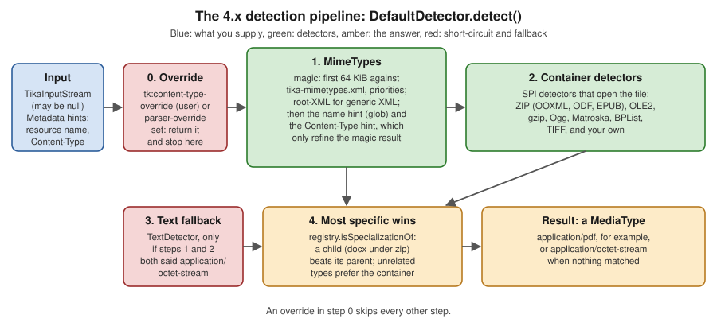

Media Types & Detection
|
This content was generated with the assistance of AI and should be verified against the official documentation before being relied on in production. |
Baseline date: 2026-10-12. This page was written against Apache Tika 4.1.0 (the latest release on Maven Central on that
date) with the 3.3.x differences noted, Java 21 and later for the examples (Tika 4.x needs Java 17), Spring Boot 4.x on
Spring Framework 7 and the Docker image apache/tika:4.1.0. Detection is the first thing Tika does with every file and
the step that decides which parser runs, so a wrong answer here is wrong everywhere downstream. This page explains what a
media type is, how Tika represents and compares types, where its knowledge of types lives (tika-mimetypes.xml), how
DefaultDetector combines magic bytes, file names, header hints and container inspection, how to add your own types and
detectors, and how the Bookshelf intake service uses all this to refuse renamed-invoice.png, a PDF with a lying
extension. The Tika.detect calls used for a first look are in
Getting Started with the Tika Facade; the pieces
around the detector are in Introduction & Architecture;
dependencies are in Setup & Installation.
All examples on this page were compiled and run against Tika 4.1.0 (tika-core, tika-parsers-standard-package as a
pom dependency and tika-serialization for TikaLoader). The sample files are small stand-ins: a one-heading
manuscript.docx (1,926 bytes), a one-page catalogue.pdf (785 bytes) and renamed-invoice.png, a copy of that PDF.
The text of Tika’s own XML registry was read from the tika-core-4.1.0 sources, and the list of detector classes from
the service files inside the 4.1.0 jars.
Media types in one page
A media type (formerly called a MIME type) is the label that says what kind of data a byte sequence is. It is
registered with IANA and written type/subtype, optionally followed by parameters:
text/html; charset=UTF-8
application/vnd.openxmlformats-officedocument.wordprocessingml.document
application/epub+zip| Part | Meaning |
|---|---|
|
One of the top-level registries: |
|
The format. A |
parameters |
|
alias |
A second name for the same format that real software produces, such as |
Source: IANA media types registry and
MediaType, Javadoc 4.1.0.
MediaType and MediaTypeRegistry
org.apache.tika.mime.MediaType is an immutable, comparable value object. MediaTypeRegistry knows how types relate to
each other. Both are in tika-core.
import org.apache.tika.mime.MediaType;
import org.apache.tika.mime.MediaTypeRegistry;
public class TypesAndHierarchy {
public static void main(String[] args) {
MediaType html = MediaType.parse("text/html; charset=UTF-8");
System.out.println(html + " | base=" + html.getBaseType()
+ " | type=" + html.getType() + " subtype=" + html.getSubtype()
+ " | params=" + html.getParameters());
MediaTypeRegistry registry = MediaTypeRegistry.getDefaultRegistry();
MediaType docx = MediaType.parse(
"application/vnd.openxmlformats-officedocument.wordprocessingml.document");
System.out.println(docx.getSubtype() + " -> " + registry.getSupertype(docx));
System.out.println("epub -> " + registry.getSupertype(MediaType.parse("application/epub+zip")));
System.out.println("html -> " + registry.getSupertype(MediaType.parse("text/html")));
System.out.println("rss -> " + registry.getSupertype(MediaType.parse("application/rss+xml")));
System.out.println("pdf -> " + registry.getSupertype(MediaType.parse("application/pdf")));
System.out.println("docx is a zip? " + registry.isInstanceOf(docx, MediaType.APPLICATION_ZIP));
System.out.println("aliases of pdf: " + registry.getAliases(MediaType.application("pdf")));
System.out.println("normalize(application/x-pdf) = "
+ registry.normalize(MediaType.parse("application/x-pdf")));
System.out.println("known types: " + registry.getTypes().size());
}
}Output on Tika 4.1.0:
text/html; charset=UTF-8 | base=text/html | type=text subtype=html | params={charset=UTF-8}
vnd.openxmlformats-officedocument.wordprocessingml.document -> application/x-tika-ooxml
epub -> application/zip
html -> text/plain
rss -> application/xml
pdf -> application/octet-stream
docx is a zip? true
aliases of pdf: [application/x-pdf]
normalize(application/x-pdf) = application/pdf
known types: 1687What the output teaches:
-
The hierarchy is the reason detection can be layered. A
.docxfile is a kind ofapplication/x-tika-ooxml, which is a kind ofapplication/zip. When one detector saysapplication/zipand another says the DOCX type, the registry tells Tika that the DOCX answer is the more specific one and should win. -
Built-in heuristics fill the gaps. If the XML registry gives no explicit parent, a
text/*type falls back totext/plain, a+xmltype toapplication/xmland anything else toapplication/octet-stream, the root of the tree. -
Always normalise before comparing.
application/x-pdfis an alias; compareregistry.normalize(type)against the canonical name, or useregistry.isInstanceOf(type, canonical). Comparing strings misses aliases and parameters. -
Parameters stay on the type.
getBaseType()drops them. Use it when you only care about the format.
The most useful methods:
| Method | Use |
|---|---|
|
Parses |
|
Factories for the common top-level types. Constants exist for |
|
The parent in the hierarchy. |
|
|
|
|
|
Direct children; |
|
Alias handling. |
|
Programmatic changes to a registry you own. For the shared registry, use |
MediaTypeRegistry.getDefaultRegistry() is the registry that Tika’s own detectors use. TikaLoader.getMediaTypeRegistry()
returns the one that a loaded configuration works with.
Where the types come from: tika-mimetypes.xml
Tika’s knowledge of formats is data, not code. The file org/apache/tika/mime/tika-mimetypes.xml inside tika-core
declares 1,699 mime-type elements in 4.1.0 (the registry reports 1,687 distinct types after aliases are folded). Its
format is derived from the freedesktop.org shared-mime-info specification, with Tika extensions for richer magic.
The element names below were checked against the reader’s constants (MimeTypesReaderMetKeys).
| Element | Meaning |
|---|---|
|
One type. May be empty (a name that exists but has no rules). |
|
Another name for this type. |
|
Human-readable description, specification links and the Apple UTI. Not used for detection. |
|
A file-name rule. |
|
A group of byte rules. The priority orders groups: higher runs first, and lower-priority groups are skipped once a higher one matched. In 4.1.0 most groups use 50 and 60, a few go up to 80. |
|
One byte test. |
|
For XML formats, identify by the root element when the generic magic says |
|
The parent in the hierarchy. |
The PDF entry shows several features at once (abridged from 4.1.0):
<mime-type type="application/pdf">
<alias type="application/x-pdf"/>
<acronym>PDF</acronym>
<_comment>Portable Document Format</_comment>
<tika:uti>com.adobe.pdf</tika:uti>
<magic priority="50">
<!-- Normally just %PDF- -->
<match value="%PDF-" type="string" offset="0"/>
<!-- Sometimes has a UTF-8 Byte Order Mark first -->
<match value="\xef\xbb\xbf%PDF-" type="string" offset="0"/>
</magic>
<magic priority="40">
<!-- a lower-priority match for %PDF-#.# near the start of the file -->
...
</magic>
<glob pattern="*.pdf"/>
</mime-type>Source: org.apache.tika.mime, Javadoc 4.1.0,
tika-mimetypes.xml on GitHub
and freedesktop.org Shared MIME-info specification.
Two facts about the magic engine matter for performance and correctness:
-
Magic reads at most 64 KiB.
MimeTypes.getMinLength()returns 65,536 in 4.1.0. Rules must match inside that prefix, and the detector marks and resets the stream around the read, so it does not consume it. A rule with an offset beyond 64 KiB never matches. -
Highly specific rules get high priorities, generic ones low. Containers need higher priorities than the things they contain, or a ZIP of images would be reported as an image. The file’s own header comment says so.
The pipeline: DefaultDetector
DefaultDetector is what new Tika(), AutoDetectParser and TikaLoader.loadDetectors() give you unless you
configure otherwise. In 4.1.0 its detect method (read from the source) does this:

-
Override. If the metadata has
tk:content-type-override(set by you,TikaCoreProperties.CONTENT_TYPE_USER_OVERRIDE) ortk:content-type-parser-override(set by a parser for an embedded file), that value is the answer and nothing else runs. -
MimeTypes(magic, name and header hints). The first 64 KiB are matched against the magic rules. Then the name intk:resource-nameis looked up in the glob rules, and theContent-Typeheader value, if present, is looked up as a type. Each hint only refines the magic result: it replaces the magic answer only when it is the same type or a more specific one in the registry. When magic found nothing, the hint is used as is. The result is stored intk:content-type-magic-detected. -
Container detectors. Detectors loaded through the service-provider mechanism look inside the file: ZIP (OOXML, ODF, EPUB, JAR, IPA, KMZ, Frictionless Data Package and others), OLE2 (Word
.doc, Excel.xls, Outlook.msg), gzip specialisations, Ogg, Matroska, binary property lists, raw TIFF. They run in name order and the registry keeps the most specific answer. -
Text fallback. Only if steps 2 and 3 both said
application/octet-stream,TextDetectorscans the first 512 bytes for control characters and returnstext/plainif there are none (or very few). -
Most specific wins. The result is the most specific of the magic answer, the container answer and the text answer; for unrelated types the container answer is preferred.
The detectors that new DefaultDetector().getDetectors() lists in a 4.1.0 project with tika-parsers-standard-package
(the magic MimeTypes and the text fallback are built into DefaultDetector itself and are not in this list):
| Class | Recognises |
|---|---|
|
ZIP-based formats: OOXML (via |
|
OLE2 containers: Word, Excel, PowerPoint, Visio, Outlook and others. |
|
Further OLE2 formats from the miscellaneous office module. |
|
Specialisations of gzip. |
|
Binary property lists and the Apple formats that use them. |
|
Raw TIFF variants. |
|
Matroska/WebM and Ogg families. |
A project with fewer modules sees fewer detectors: the list is whatever is on the classpath.
NameDetector: name patterns you define
The glob rules of tika-mimetypes.xml are applied inside MimeTypes, so the default pipeline needs no separate name
detector. org.apache.tika.detect.NameDetector (in tika-core since 0.3) is a standalone detector for name rules of
your own: you give it a map from java.util.regex.Pattern to MediaType, and it matches the name in
tk:resource-name against each pattern in map order. It is not registered as a service in 4.1.0, so DefaultDetector
never runs it; you build it yourself and, if you want it in the pipeline, put it in a CompositeDetector. Before
matching, it removes a URL query (?...), every path element up to the last / or \, a fragment (#...) that
comes after the extension, decodes %nn escapes as UTF-8 and trims whitespace. Each pattern must match the whole
remaining name. The stream is ignored, so it may be null, and the answer is application/octet-stream when nothing
matches.
import java.util.LinkedHashMap;
import java.util.Map;
import java.util.regex.Pattern;
import org.apache.tika.detect.NameDetector;
import org.apache.tika.metadata.Metadata;
import org.apache.tika.metadata.TikaCoreProperties;
import org.apache.tika.mime.MediaType;
import org.apache.tika.parser.ParseContext;
public class NameOnly {
public static void main(String[] args) {
Map<Pattern, MediaType> patterns = new LinkedHashMap<>(); // the first matching pattern wins
patterns.put(Pattern.compile("order-\\d+\\.txt"), MediaType.application("vnd.bookshelf.order"));
patterns.put(Pattern.compile(".*\\.bsm"), MediaType.application("vnd.bookshelf.manifest+xml"));
NameDetector detector = new NameDetector(patterns);
for (String name : new String[] {
"order-0042.txt", "https://intake.example.org/in/order-0042.txt?sig=abc",
"C:\\exports\\intake%20list.bsm", "notes.txt"}) {
Metadata md = new Metadata();
md.set(TikaCoreProperties.RESOURCE_NAME_KEY, name);
System.out.println(name + " -> " + detector.detect(null, md, new ParseContext()));
}
}
}Output on Tika 4.1.0:
order-0042.txt -> application/vnd.bookshelf.order
https://intake.example.org/in/order-0042.txt?sig=abc -> application/vnd.bookshelf.order
C:\exports\intake%20list.bsm -> application/vnd.bookshelf.manifest+xml
notes.txt -> application/octet-streamLike any name rule it is only a guess about content: use it for naming conventions of a trusted upstream, not to type uploads. The constructor does not copy the map, and the Javadoc warns that the map must not be modified while the detector is in use.
Source: NameDetector, Javadoc 4.1.0.
Running the pipeline by hand
The 4.x Detector interface has one method:
public interface Detector extends Serializable, SelfConfiguring {
MediaType detect(TikaInputStream tis, Metadata metadata, ParseContext parseContext)
throws IOException;
}The stream may be null when only the name and headers are known. The next program calls the detector directly with
the Bookshelf files, each time passing the name through Metadata:
import java.nio.file.Path;
import org.apache.tika.config.loader.TikaLoader;
import org.apache.tika.detect.Detector;
import org.apache.tika.io.TikaInputStream;
import org.apache.tika.metadata.HttpHeaders;
import org.apache.tika.metadata.Metadata;
import org.apache.tika.metadata.TikaCoreProperties;
import org.apache.tika.parser.ParseContext;
public class DetectByHand {
public static void main(String[] args) throws Exception {
Detector detector = TikaLoader.loadDefault().loadDetectors();
for (String f : new String[] {"manuscript.docx", "catalogue.pdf", "renamed-invoice.png"}) {
Metadata md = new Metadata();
// TikaInputStream.get(path, metadata) puts the file name into tk:resource-name
try (TikaInputStream tis = TikaInputStream.get(Path.of(f), md)) {
System.out.println(f + " -> " + detector.detect(tis, md, new ParseContext())
+ " (tk:resource-name=" + md.get(TikaCoreProperties.RESOURCE_NAME_KEY) + ")");
}
}
// name only: no stream
Metadata nameOnly = new Metadata();
nameOnly.set(TikaCoreProperties.RESOURCE_NAME_KEY, "novel.epub");
System.out.println("name only novel.epub -> " + detector.detect(null, nameOnly, new ParseContext()));
// PDF bytes with a PNG name: the bytes win
Metadata lying = new Metadata();
lying.set(TikaCoreProperties.RESOURCE_NAME_KEY, "renamed-invoice.png");
try (TikaInputStream tis = TikaInputStream.get(Path.of("catalogue.pdf"))) {
System.out.println("pdf bytes + png name -> " + detector.detect(tis, lying, new ParseContext()));
}
// PDF bytes with a Content-Type header of text/plain: the bytes win again
Metadata header = new Metadata();
header.set(HttpHeaders.CONTENT_TYPE, "text/plain");
try (TikaInputStream tis = TikaInputStream.get(Path.of("catalogue.pdf"))) {
System.out.println("pdf bytes + text/plain header -> " + detector.detect(tis, header, new ParseContext()));
}
// The user override is absolute
Metadata forced = new Metadata();
forced.set(TikaCoreProperties.CONTENT_TYPE_USER_OVERRIDE, "image/png");
try (TikaInputStream tis = TikaInputStream.get(Path.of("catalogue.pdf"))) {
System.out.println("user override -> " + detector.detect(tis, forced, new ParseContext()));
}
}
}Output:
manuscript.docx -> application/vnd.openxmlformats-officedocument.wordprocessingml.document (tk:resource-name=manuscript.docx)
catalogue.pdf -> application/pdf (tk:resource-name=catalogue.pdf)
renamed-invoice.png -> application/pdf (tk:resource-name=renamed-invoice.png)
name only novel.epub -> application/epub+zip
pdf bytes + png name -> application/pdf
pdf bytes + text/plain header -> application/pdf
user override -> image/pngThe same checks on text and degenerate input (stream built from bytes, no name unless stated):
"class Main {}" + name Main.java -> text/x-java-source
"class Main {}" without a name -> text/plain
empty stream -> application/octet-stream
11 arbitrary binary bytes -> application/octet-streamPlain text has no magic, so the name is what turns text/plain into text/x-java-source. This is the one place where
a hint legitimately adds information.
Which hint wins
| Input signal | Strength | Behaviour |
|---|---|---|
|
Absolute |
Returned unchanged. Use only for values you control. The user override is checked first, the parser override second. |
Magic bytes |
Strong |
Beat any name or header that contradicts them. |
Container structure (ZIP entries, OLE2 streams) |
Strong |
Refines a generic magic answer to the exact format. |
|
Hint |
Applied only if it equals the magic type or specialises it. Ignored for server-side script extensions when the name is an HTTP URL. |
|
Hint |
The same rule as the name. |
|
Hint for charset only |
Read by the charset detectors, not by media type detection; see Character Encoding Detection. |
What 4.x changed in the detector API
| Book (1.x) and 3.x | 4.x |
|---|---|
|
|
|
|
Detectors read their configuration from constructor arguments or XML |
A detector implements the marker |
Container detectors in |
Container detectors live in the format modules and in |
Stream left at its start by |
|
|
Deprecated; use |
|
|
Source: Migrating to Tika 4.x, 3.3.2, Content detection and Tika in Action, chapter 4 (document type detection, written for 1.0).
TikaInputStream and detection
Detection needs two things from the stream: a way to peek at the first bytes and put them back, and, for container
formats, random access to the whole file. TikaInputStream supplies both.
-
TikaInputStream.get(Path)orget(Path, Metadata)wraps a file and setstk:resource-nameto the file name. No spooling is needed because the file already exists. -
TikaInputStream.get(byte[])andget(InputStream)wrap memory or a one-way stream. When a container detector callsgetPath()on a one-way stream, Tika spools it to a temporary file that is deleted when the stream closes. -
rewind()repositions the stream at its beginning for the parser that follows detection, whilemarkandresetprotect the short peeks. -
getOpenContainer()andsetOpenContainer(Object)let a container detector hand an already openedZipFileor POIFS file system to the parser, so the file is opened once. Thezip:detector-zip-file-openedmetadata key says whether that happened.
Always put TikaInputStream in a try-with-resources block: closing it deletes any temporary file. The cost model is
simple: files and byte arrays are free to detect; a network stream of a ZIP-based format is copied to disk once,
whatever you do. See the spooling chapter of the 4.1.x documentation for the limits that govern it.
Container detection and salvaging
OOXML (.docx, .xlsx, .pptx), OpenDocument, EPUB and plain archives all begin with the ZIP signature, so magic can
only say application/zip. DefaultZipContainerDetector opens the archive and looks at its entries and manifest to name
the real format: [Content_Types].xml for OOXML, mimetype for ODF and EPUB, and so on. OLE2 formats (the old .doc
and .xls, Outlook .msg) are handled the same way by POIFSContainerDetector and MiscOLEDetector, which read the
directory of streams inside the compound file.
When the central directory of a ZIP is damaged or missing, for example because the upload was cut off, Tika tries to
salvage the file: it reads the local file headers at the start of the archive and rebuilds a directory. Salvaging
happens only when DefaultZipContainerDetector is used, the ParseContext carries ParsingIntent.WILL_PARSE
(AutoDetectParser sets it) and the file cannot be opened normally. A salvaged file gets the metadata key
zip:salvaged=true.
The next program truncates the manuscript.docx stand-in to several lengths and detects each prefix with the intent set:
import java.nio.file.Files;
import java.nio.file.Path;
import java.util.Arrays;
import org.apache.tika.detect.DefaultDetector;
import org.apache.tika.io.TikaInputStream;
import org.apache.tika.metadata.Metadata;
import org.apache.tika.parser.ParseContext;
import org.apache.tika.parser.ParsingIntent;
public class TruncatedUpload {
public static void main(String[] args) throws Exception {
byte[] docx = Files.readAllBytes(Path.of("manuscript.docx"));
for (double fraction : new double[] {1.0, 0.9, 0.6, 0.1}) {
Path cut = Files.createTempFile("cut", ".bin");
Files.write(cut, Arrays.copyOf(docx, (int) (docx.length * fraction)));
Metadata md = new Metadata();
ParseContext context = new ParseContext();
context.set(ParsingIntent.class, ParsingIntent.WILL_PARSE);
try (TikaInputStream tis = TikaInputStream.get(cut, md)) {
System.out.println(fraction + " -> " + new DefaultDetector().detect(tis, md, context)
+ ", zip:salvaged=" + md.get("zip:salvaged"));
}
}
}
}Output (the 0.1 line is accompanied by a Xerces stack trace in the log, because the content-types entry is cut in the middle of an attribute):
1.0 -> application/vnd.openxmlformats-officedocument.wordprocessingml.document, zip:salvaged=null
0.9 -> application/vnd.openxmlformats-officedocument.wordprocessingml.document, zip:salvaged=true
0.6 -> application/vnd.openxmlformats-officedocument.wordprocessingml.document, zip:salvaged=true
0.1 -> application/x-tika-ooxml, zip:salvaged=trueA cut file that still holds the content-types entry keeps its exact type; one that does not degrades to the generic
application/x-tika-ooxml, and is then unparseable. The practical rule: truncated uploads are not always reported as
errors by detection, so decide acceptance on a successful parse, not on the detected type alone. These figures come
from a 1.9 KB stand-in file; the thresholds in a real manuscript differ.
Adding your own types: custom-mimetypes.xml
To teach Tika a type of your own, write a custom-mimetypes.xml in the same format as tika-mimetypes.xml and put it on
the classpath. MimeTypesFactory loads tika-mimetypes.xml first, then every custom-mimetypes.xml found at the root
of any classpath entry, then, if the system property tika.custom-mimetypes is set, that external file. Later
definitions are added to the registry, so a custom file can add types and rules and set parents. The Bookshelf intake
service has three formats of its own:
<?xml version="1.0" encoding="UTF-8"?>
<mime-info>
<!-- A purchase order: a text file whose first bytes identify it. -->
<mime-type type="application/vnd.bookshelf.order">
<_comment>Bookshelf purchase order</_comment>
<glob pattern="*.bso"/>
<magic priority="60">
<match value="BSHELF-ORDER/1" type="string" offset="0"/>
</magic>
<sub-class-of type="text/plain"/>
</mime-type>
<!-- An XML manifest recognised by its root element and namespace. -->
<mime-type type="application/vnd.bookshelf.manifest+xml">
<root-XML localName="manifest" namespaceURI="urn:bookshelf:manifest:1"/>
<glob pattern="*.bsm"/>
<sub-class-of type="application/xml"/>
</mime-type>
<!-- A batch of manuscripts: a ZIP that a custom Detector recognises (next section). -->
<mime-type type="application/vnd.bookshelf.batch+zip">
<glob pattern="*.bsb"/>
<sub-class-of type="application/zip"/>
</mime-type>
</mime-info>Save it as src/main/resources/custom-mimetypes.xml. With the file on the classpath the facade needs no changes:
Tika tika = new Tika();
System.out.println(tika.detect(Path.of("order-0042.bso"))); // application/vnd.bookshelf.order
System.out.println(tika.detect(Path.of("order-0042.txt"))); // same bytes, wrong name: still the order type
System.out.println(tika.detect(Path.of("intake.bsm"))); // application/vnd.bookshelf.manifest+xml
System.out.println(tika.detect(Path.of("other.xml"))); // application/xmlOutput:
order-0042.bso -> application/vnd.bookshelf.order
order-0042.txt -> application/vnd.bookshelf.order
intake.bsm -> application/vnd.bookshelf.manifest+xml
other.xml -> application/xmlThe .txt copy is typed by its magic, because a type that is a specialisation of text/plain outranks the name’s
text/plain. A custom type only gets a parser if one is registered for it: until then AutoDetectParser falls back to the
parent’s parser (here, the text parser for the order, the XML parser for the manifest), which is usually what you want.
Notes on custom types:
-
Classpath, not working directory. The file must be at the root of a jar or directory on the classpath of the JVM that does the detection. For the CLI or the server, put the jar in the extras directory described in the setup and Docker pages, or use
-Dtika.custom-mimetypes=/path/to/custom-mimetypes.xml(the property name comes from the 4.1.0 source; not run here). -
Use
sub-class-of. Without a parent, a new type derives fromapplication/octet-streamand cannot refine anything. -
Pick priorities deliberately. The default Tika groups sit mostly at 50 and 60; give a strict container rule more, a loose rule less.
-
Glob clashes. Two types claiming
*.bsogive an unpredictable winner. Prefix vendor types withvnd.. -
3.x location. The 3.x guide describes the same file under
org/apache/tika/mime/custom-mimetypes.xml; in 4.1.0 the loader searches the classpath root, which is where this example placed it. Keep to the root in new code.
A custom Detector
Some formats cannot be expressed as bytes at an offset: a ZIP that contains bookshelf-batch.json needs the archive’s
directory. That is a job for a Detector. This one returns the batch type only for such ZIPs and otherwise says nothing
(application/octet-stream), which, as in the composite, never overrides another detector’s answer:
package demo;
import java.io.IOException;
import java.util.zip.ZipFile;
import org.apache.tika.detect.Detector;
import org.apache.tika.io.TikaInputStream;
import org.apache.tika.metadata.Metadata;
import org.apache.tika.mime.MediaType;
import org.apache.tika.parser.ParseContext;
/** Recognises a ZIP that carries a bookshelf-batch.json entry. */
public class BatchZipDetector implements Detector {
public static final MediaType BATCH = MediaType.application("vnd.bookshelf.batch+zip");
@Override
public MediaType detect(TikaInputStream tis, Metadata metadata, ParseContext context)
throws IOException {
if (tis == null) {
return MediaType.OCTET_STREAM;
}
// Cheap guard first: a ZIP starts with PK\003\004.
tis.mark(4);
byte[] head = new byte[4];
int n = tis.read(head);
tis.reset();
if (n < 4 || head[0] != 'P' || head[1] != 'K' || head[2] != 3 || head[3] != 4) {
return MediaType.OCTET_STREAM;
}
// Random access needs a file; TikaInputStream spools to disk only if necessary.
try (ZipFile zip = new ZipFile(tis.getPath().toFile())) {
if (zip.getEntry("bookshelf-batch.json") != null) {
return BATCH;
}
} catch (IOException e) {
// not a readable ZIP: say nothing
}
return MediaType.OCTET_STREAM;
}
}Register it with the standard Java service mechanism, in
src/main/resources/META-INF/services/org.apache.tika.detect.Detector:
demo.BatchZipDetectorDefaultDetector loads service-registered detectors, sorts them by class name and runs them after magic. Because the
custom file above declared application/vnd.bookshelf.batch+zip as a child of application/zip, the composite accepts
the detector’s answer as more specific than the ZIP one:
batch.zip -> application/vnd.bookshelf.batch+zip
plain.zip -> application/zip
batch isInstanceOf zip = trueRules for custom detectors:
-
Do not consume the stream. Peek with
markandreset, or usegetPath()/rewind(). The parser reads the same stream afterwards. -
Return
application/octet-streamfor "I do not know". Never throw for foreign data. -
Be cheap or be late. A detector runs for every file of every type. Test a signature first, as above, and open the file only when it matters.
-
Register the type in the registry. A detector that returns a type the registry does not know as a descendant of what the earlier detectors returned loses to the earlier answer.
-
The class is yours to keep serialisable.
DetectorextendsSerializable; keep state out of it or make ittransient. -
Order. Service-loaded detectors run in class-name order after the built-in ones. To control order or to wrap
DefaultDetector, build your ownCompositeDetectorand pass it tonew Tika(detector, parser).
The @TikaComponent annotation that Tika’s own detectors carry is used by its build to generate the component index that
JSON configuration reads; this page used the plain service file, which DefaultDetector loads without it. How a
custom detector is addressed by name in tika-config.json was not verified here.
Configuring detectors in tika-config.json
In 4.x, detectors are configured in the detectors array of the JSON file, loaded with TikaLoader. A list names
only the detectors it contains; to keep the defaults add a default-detector entry.
tika-config.json){
"detectors": [
{
"default-detector": {
"exclude": ["ogg-detector", "matroska-detector"]
}
}
]
}Loading it and listing what is left:
TikaLoader loader = TikaLoader.load(Path.of("tika-config.json"));
Detector detector = loader.loadDetectors();
Tika tika = new Tika(detector, loader.loadAutoDetectParser());Result on 4.1.0, in the project that also registers the custom BatchZipDetector shown above: the DefaultDetector listed BatchZipDetector, BPListDetector,
GZipSpecializationDetector, RawTiffDetector, POIFSContainerDetector, MiscOLEDetector and
DefaultZipContainerDetector; the Ogg and Matroska detectors were gone, and catalogue.pdf still detected as
application/pdf. Excluding detectors you never need saves a little work per file and shrinks the attack surface.
The PKCS7 / CMS detector
By default a CMS (PKCS7) message is typed by magic only, as application/pkcs7-signature; the parser refines the subtype
later. The opt-in pkcs-7-detector types it earlier, for example as application/pkcs7-mime; smime-type=signed-data.
Because its answer is a sibling of the magic answer, not a specialisation, the composite keeps the first of two siblings,
so it must be listed before default-detector:
{
"detectors": [
{ "pkcs-7-detector": {} },
{ "default-detector": {} }
]
}Loading this file on 4.1.0 produced a CompositeDetector of org.apache.tika.detect.crypto.Pkcs7Detector
followed by DefaultDetector, which verifies the names and the order. The detection of a real CMS file was not run (no
signed sample is part of the Bookshelf set); enable it only if routing depends on the CMS subtype before parsing.
|
In 3.x the same configuration was XML ( |
Applied: validating uploads by content
The Bookshelf intake service receives renamed-invoice.png, a PDF whose extension says PNG. The OWASP File Upload
Cheat Sheet is explicit that the Content-Type header and the extension come from the client and can be forged, and
that content should be validated on the server. Tika gives a direct way: detect from the bytes, compare with the name,
accept only an allow-list.
import java.io.IOException;
import java.nio.file.Path;
import java.util.Set;
import org.apache.tika.config.loader.TikaLoader;
import org.apache.tika.detect.Detector;
import org.apache.tika.io.TikaInputStream;
import org.apache.tika.metadata.Metadata;
import org.apache.tika.metadata.TikaCoreProperties;
import org.apache.tika.mime.MediaType;
import org.apache.tika.mime.MediaTypeRegistry;
import org.apache.tika.mime.MimeTypes;
import org.apache.tika.parser.ParseContext;
public class UploadGuard {
/** Types Bookshelf accepts from publishers. */
private static final Set<MediaType> ALLOWED = Set.of(
MediaType.application("pdf"),
MediaType.application("vnd.openxmlformats-officedocument.wordprocessingml.document"),
MediaType.application("epub+zip"),
MediaType.image("png"),
MediaType.image("jpeg"));
private final Detector detector;
private final MediaTypeRegistry registry =
MimeTypes.getDefaultMimeTypes().getMediaTypeRegistry();
public UploadGuard() throws Exception {
this.detector = TikaLoader.loadDefault().loadDetectors();
}
public String check(Path file, String claimedName) throws IOException {
Metadata nameOnly = new Metadata();
nameOnly.set(TikaCoreProperties.RESOURCE_NAME_KEY, claimedName);
MediaType byName;
MediaType byContent;
try (TikaInputStream tis = TikaInputStream.get(file)) {
byName = detector.detect(null, nameOnly, new ParseContext());
byContent = registry.normalize(detector.detect(tis, new Metadata(), new ParseContext()));
}
if (!ALLOWED.contains(byContent)) {
return "REJECT " + claimedName + ": content is " + byContent;
}
if (!byContent.equals(byName)) {
return "REJECT " + claimedName + ": name says " + byName + " but content is " + byContent;
}
return "ACCEPT " + claimedName + " as " + byContent;
}
public static void main(String[] args) throws Exception {
UploadGuard guard = new UploadGuard();
System.out.println(guard.check(Path.of("manuscript.docx"), "manuscript.docx"));
System.out.println(guard.check(Path.of("catalogue.pdf"), "catalogue.pdf"));
System.out.println(guard.check(Path.of("renamed-invoice.png"), "renamed-invoice.png"));
}
}Output:
ACCEPT manuscript.docx as application/vnd.openxmlformats-officedocument.wordprocessingml.document
ACCEPT catalogue.pdf as application/pdf
REJECT renamed-invoice.png: name says image/png but content is application/pdfThe same check belongs in a web layer. The JSF pages of this site show how a Faces application receives uploaded files,
including the Part and the declared content type that must not be trusted:
File Upload and Download and
PrimeFaces: Files, Media, Charts and Drag and Drop.
Call the guard from the backing bean or from a validator, with the stream of the Part, before anything is stored or
handed to a parser.
What detection does and does not give you:
-
It is classification, not validation. A file typed
application/pdfhas the PDF signature; it can still be malformed, huge, encrypted or hostile. Parse untrusted files in a forked or isolated process (see Tika Pipes and Robustness, Limits & Timeouts) and apply size, time and depth limits. -
Polyglots exist. A file can be valid in two formats. Tika returns one answer; deny-lists of dangerous types are weaker than allow-lists of expected ones.
-
Compare, then decide. The mismatch between name and content is itself a useful signal: log it, reject it or store the file under a name derived from the detected type, never the client’s.
-
Rename on storage. Store uploads under a generated name outside any web-served directory, with the extension taken from the detected type (
MimeTypes.getDefaultMimeTypes().forName(...).getExtension()gives.pdffor PDF), as the OWASP sheet advises. -
Keep the allow-list in the registry’s terms. Use
registry.isInstanceOf(type, canonical)if a family is acceptable (for example anyimage/*you can render), and normalise aliases first. -
Header limits. A web server that sets
Content-Lengthlies about size no better than about type; enforce the real byte count while reading.
Source: OWASP File Upload Cheat Sheet and Apache Tika, Security model.
Pitfalls
-
Detecting by name only.
Tika.detect(String)anddetect(Path)without stream access are guesses from the extension. -
Reading a stream twice. In 4.x
Tika.detect(InputStream)leaves the stream advanced. Use aTikaInputStreamandrewind(), or detect from thePath. -
Comparing type strings. Use the registry; aliases and parameters make plain equality unreliable.
-
application/octet-streamis a result, not an error. It means "nothing matched". Treat it as unknown, and note that empty files are alsoapplication/octet-stream. -
The 64 KiB limit. Magic placed deeper in a file is invisible to
MimeTypes; write aDetectorfor such formats. -
Parameters in comparisons.
text/html; charset=UTF-8is not equal totext/html; usegetBaseType(). -
Custom files in the wrong place. A
custom-mimetypes.xmlinside a directory that is not on the classpath of the process that detects (the server, a forked JVM) is silently ignored. -
Trusting the
Content-Typeheader of an upload. It is a hint at best, and any client can set it. -
Parsers disagree with detectors after a custom type. A type with no registered parser is parsed by its parent’s parser; check the result on real files.
1.x to 4.x at a glance
| Topic | 1.x (book) and 2.x/3.x | 4.x |
|---|---|---|
Detector signature |
|
|
Configuration |
|
|
Default detector |
|
The same idea; |
Custom types |
|
|
Name key |
|
|
Override keys |
|
|
ZIP handling |
Streaming and file-based container detectors |
|
Java baseline |
8 (2.x), 11 (3.x) |
17 |
Source: Migrating to Tika 4.x and Metadata changes in 4.x.
Checklist
-
Detect from the bytes with a
TikaInputStream; give the name and headers as hints only. -
Normalise types through
MediaTypeRegistrybefore comparing; useisInstanceOffor families. -
Treat
application/octet-streamas unknown and decide what the intake does with it. -
Put custom types in
custom-mimetypes.xmlat the classpath root, with asub-class-of, and verify withTika.detect. -
Write a
Detectoronly for what byte rules cannot express, keep it cheap and non-consuming, register it by service file. -
Exclude detectors you do not need in
tika-config.json, and addpkcs-7-detectorfirst only if you need the CMS subtype. -
Validate uploads against an allow-list of detected types and compare with the client’s name; never trust the header.
-
Decide acceptance of truncated archives on a successful parse, not on the detected type.